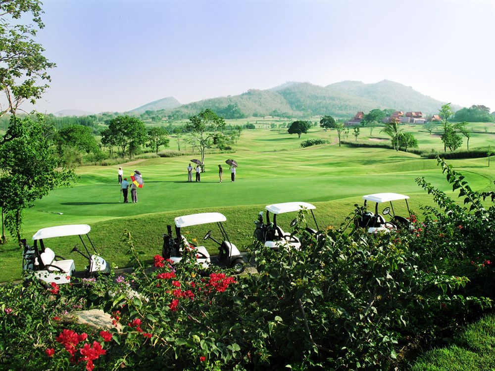
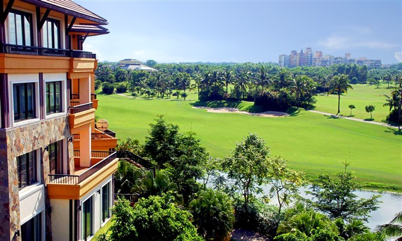

高尔夫
GOLF
挥杆享受天地间的乐趣
高尔夫比任何一项运动都更像是一次发现之旅
在高球爱好者最真实的梦幻世界里，无论是球场的惊世美景，还是高尔夫大师的精湛球技秀，
总能带给人们对于美妙与惊艳的终极体验。作为一种更加追求生活品质与体验的地产，海外旅游地产正在吸引着越来越多的目光，
而且往往具有较好的投资价值。高尔夫地产是其中一种重要的类型，日益受到投资者的关注和青睐。
以 高尔夫 的名义投资海外房产
高品质生活追求催生海外旅游地产热潮。高尔夫地产是旅游地产的一种重要类型，是一种高端、先进的地产。随着国人近几年海外投资与置业热潮的来临，海外旅游地产也正在吸引着越来越多的目光。那么究竟何为旅游地产、高尔夫地产，在投资这类地产时又需要了解哪些信息呢？ 让居外来为您进行详细的分析和解读。
查看详情高尔夫这项运动具有无与伦比的魅力，全世界有着很多辉煌壮观的特色高球球场以及顶级高尔夫赛事。在这些高尔夫人最真实的梦幻世界里，无论是球场的惊世美景，还是高尔夫大师的精湛球技秀，总能带给人们对于美妙与惊艳的终极体验。那种置身于大地与天堂之间的壮丽感觉，尽显高尔夫精致优雅的贵族气质。
查看详情圆石滩
世界上最美的17英里
欣赏项目：圆石滩球场以及圆石滩职业——业余配对赛
圆石滩球场的风景美得无话可说。球道两旁一边是悬崖峭壁和峭壁下海浪汹涌的太平洋，沿着海岸线走, 可以看到堆积如山的海狮与海豹, 另一边是掩映在古树参天的红杉林中亿万富翁和明星们的豪宅。
查看详情锯齿草球场
天使与魔鬼的化身
欣赏项目：TPC锯齿草球场以及球员锦标赛
1982年球员锦标赛永久进驻TPC锯齿草球场以来，在很短的时间内，它迅速成为全美高尔夫粉丝们皆知的高尔夫球场之一。迄今为止，没有球员曾在TPC锯齿草成功卫冕过。他们对这个球场的看法基本一致：“诡诈、恼人、如履薄冰”。
查看详情K俱乐部
欧洲最奢华的高尔夫庄园
欣赏项目：K俱乐部以及莱德杯
拥有K俱乐部的会员资格就意味着可以在这里终身坐享奢华。K俱乐部的两个18洞高尔夫球场都是由“高球皇帝”阿诺德•帕尔默设计，一个是沿Liffey河而建的Smurfit球场，另一个是Liffey河对岸的palmer球场。只要一位球手欲称霸球坛，他肯定会专程前往爱尔兰去K俱乐部追寻冠军的足迹，去Smurfit球场确定自己的位置。
查看详情圣安德鲁斯
世界上最古老的高尔夫球场
欣赏项目：圣安德鲁斯老球场以及英国公开赛
在几乎任何一份世界球场排名中，圣安德鲁斯老球场都会在前10之列。它是如此特别的林克斯球场，因为它是大自然母亲的作品，以至于人们直接称呼它为“老球场”。在12世纪，这里就已经有了高尔夫运动，它也是实际上最古老的高尔夫球场。
查看详情皇家墨尔本
唤起你的高尔夫五官
欣赏项目：皇家墨尔本俱乐部以及总统杯、世界杯
创立于1891年的皇家墨尔本高尔夫俱乐部是澳洲排名第一的顶级球场，也是澳洲历史最悠久的高尔夫球俱乐部。大沙坑是皇家墨尔本最引人注目的特点。长草区包围着发球区及沙坑，天然的草地与之浑然一体，每一洞的天然景观都是大自然的恩赐。
查看详情凯越库伦度假村
罗伯特 · T · 琼斯的倾情之作
欣赏项目：TPC锯齿草球场以及球员锦标赛
对于球友来说，在昆士兰挥杆度假，绝对有坠入天堂般的感觉。在这其中，被美国《高球文摘》评为澳洲最佳的度假球场的凯悦库伦度假村绝对是不可错过的。
查看详情德班乡村俱乐部
世上最遥远及神秘的球场
欣赏项目：德班乡村俱乐部以及沃尔沃冠军赛
德班乡村俱乐部是南非最好的球场，也是公认的世界百大球场之一。除了举办沃尔沃冠军赛外，它还曾举办过17次南非公开赛，无愧是南非的NO.1。这个球场是非洲祖鲁王国高地的一部分——坐落在印度洋边缘的沙地上，18个洞起伏穿越于丰茂的土地之上。
查看详情皇家肯金盾
南非极具声望的高尔夫俱乐部
欣赏项目：皇家金盾高尔夫俱乐部以及约翰内斯堡公开赛
皇家肯辛通高尔夫俱乐部在整个南非都极具声望，也是欧巡赛约翰内斯堡公开赛的举办球场。作为南非最古老的球场之一，俱乐部分别有两个18洞的球场，分别是西球场和东球场。球场一年四季都是风景如画，球道两旁树木林立，让每位球员有身临其境的感觉。
查看详情蓝峡谷
在峡谷与湖泊间尽情挥杆
欣赏项目：蓝峡谷乡村俱乐部与尊尼 · 获加精英赛
世界球王老虎伍兹在1998年赢取了尊尼•获加精英赛后，曾评价泰国蓝峡谷球场是他打过最好的球场之一。蓝峡谷球场座落在风景怡人的普吉天堂岛，依偎在山峦之间的热带茵茵绿草上，它拥有两个18洞的冠军球场峡谷球场与湖景球场，它们都出自国际知名高尔夫球场设计师加藤嘉一之手。
查看详情英国“汉米尔顿大厦”屋顶公寓
视野远及世界的“老球场”（Old Course）高尔夫球场的第18处果岭
海外高尔夫产地推荐
旅游地产是一种更加追求生活品质与体验的地产，而且往往具有较好的投资价值，高尔夫地产便是其中一种重要的类型。稀缺的天然属性是投资最有利的保障，高尔夫地产能为投资者带来超乎想象的增值空间。
查看详情海外高尔夫产地推荐1
旅游地产是一种更加追求生活品质与体验的地产，而且往往具有较好的投资价值，高尔夫地产便是其中一种重要的类型。稀缺的天然属性是投资最有利的保障，高尔夫地产能为投资者带来超乎想象的增值空间。
海外高尔夫产地推荐2
旅游地产是一种更加追求生活品质与体验的地产，而且往往具有较好的投资价值，高尔夫地产便是其中一种重要的类型。稀缺的天然属性是投资最有利的保障，高尔夫地产能为投资者带来超乎想象的增值空间。
海外高尔夫产地推荐3
旅游地产是一种更加追求生活品质与体验的地产，而且往往具有较好的投资价值，高尔夫地产便是其中一种重要的类型。稀缺的天然属性是投资最有利的保障，高尔夫地产能为投资者带来超乎想象的增值空间。
